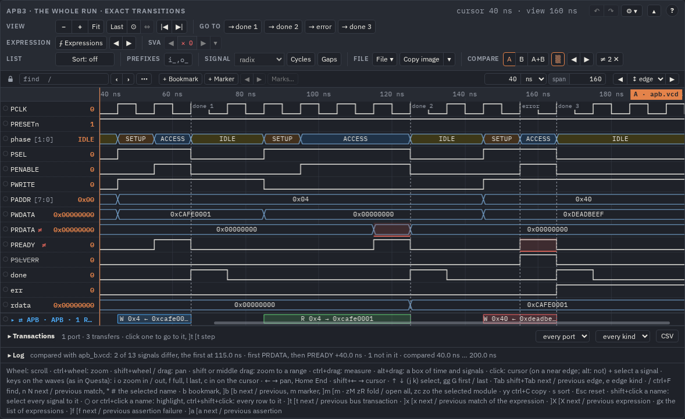
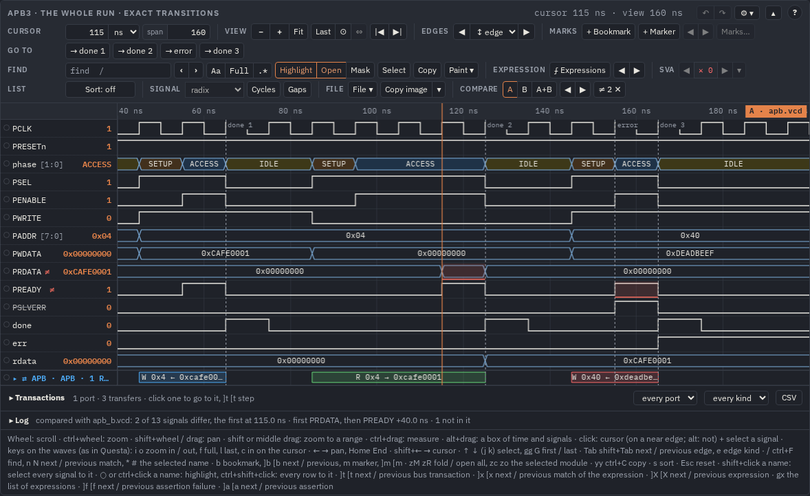
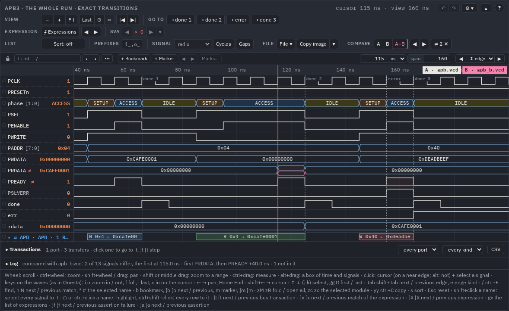
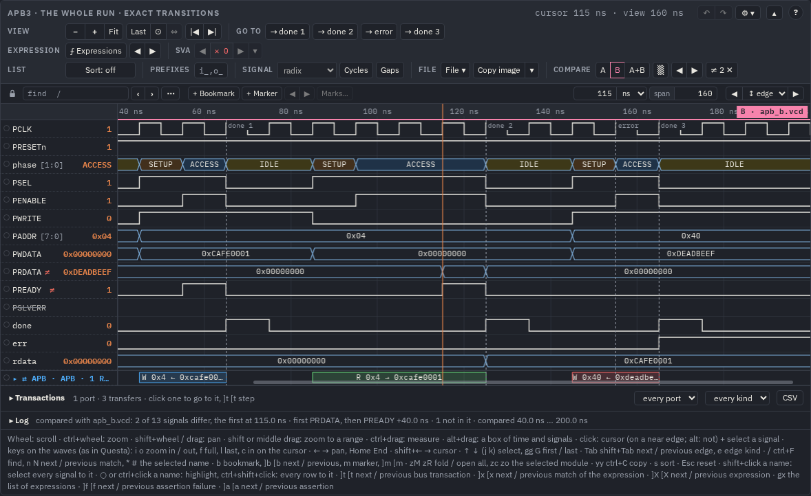
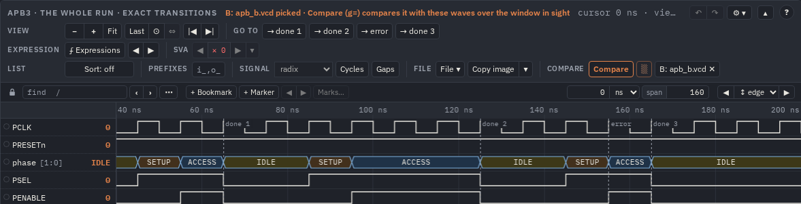
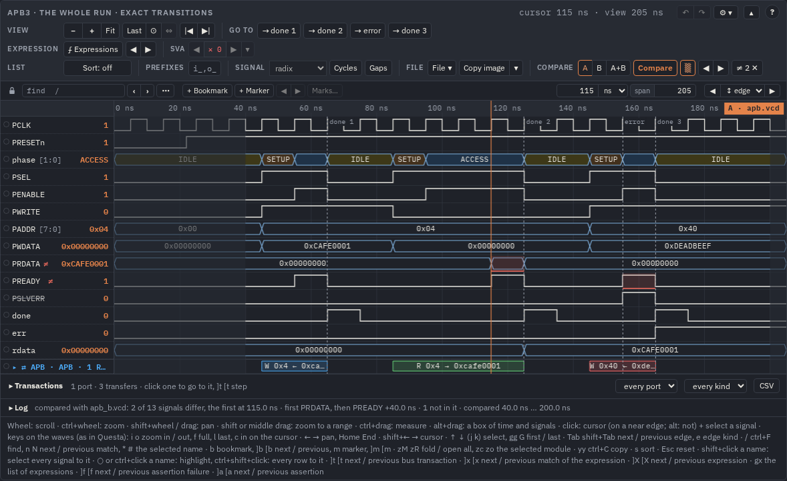
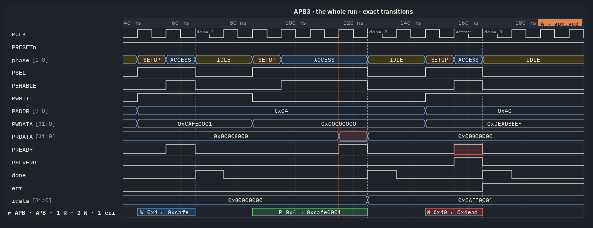

Compare two runs
The same test before and after a change of the RTL, or with another seed: Compare with… picks the second run's dump, Compare compares it with the waves you have open over the window in sight and marks, signal by signal, where the two differ. A red band on the row, ≠ on the name, and ]d to go from one difference to the next.
The example: run B of the APB testbench
The pictures compare the APB example (make examples, the view the whole run · exact transitions of
out/examples/apb/apb.html) with a run B made from its VCD by tests/guide_shots.py: in B the read at 115 ns
returns 0xDEADBEEF, the slave's PREADY for the write at 155 ns comes 10 ns later, and PSLVERR
is not in the dump at all. Three kinds of difference, each the way a real regression shows.
Loading the second dump
- Open the page with the first run (A). The compare works on exact waves — a page made with
--exact, the exact view of an example, a dump opened inwavelens/viewer.html. A clock-sampled view refuses: one cell per cycle is another time scale. - File ▾ → Compare with… (g C), then pick B's VCD: it is only picked (the bar
says B: b.vcd ✕, Compare lit beside it). An FST: turn it into VCD text first,
bin/linux-x86_64/sva vcd b.fst --out b.vcd(in VS Code the extension does that for you). - Compare in the bar (g =) compares A and B over the window in sight. Zoom or pan and nothing is compared again: the bands stay the ones of that window (the time outside it shaded) and Compare shows in the bar until you press it again — B is read once, every Compare after it only compares (The window compared).
- The signals are matched by their path; else by their name under the page's scope; else by the one path of B that ends with the
name. One found by its short name only (
tb.a.readyastb.b.ready) is still compared but said: matched by name: tb.a.ready → tb.b.ready in the toast and in the tooltip of ≠ N ✕.
Reading the differences

PRDATA ≠: a band where B read another value; PREADY ≠: a band
of 10 ns where B's ready was still low; PSLVERR struck: B has no such signal. The bar says
≠ 2 ✕.| On the waves | Means |
|---|---|
| a red band on a row | over that stretch B holds another value (the stretch shaded, a line under it) |
| ≠ after a name | the signal differs somewhere in the time both dumps cover |
| a struck name | B has no such signal (one B's reader left out for dumpBudget is said apart in its tooltip) |
| ≠ N ✕ in the bar | N signals differ (the title line says where the first one is); ✕ compares no more |
Values are compared as values, not as text: bit for bit, x and z apart, so an unknown that became known
is a difference; a bus of another width differs everywhere; a real as a number (inf, -inf, nan
are three values); a string as text; a packed struct by its whole vector (≠ on its group); the bits of a bus (B) each by its own values, with its own bands
and ≠. Only the time both dumps cover is compared; the toast says so when B is shorter. A result made elsewhere (a saved state, an
agent's) is cut to the page's time. A dump with no signal in common compares nothing, and says so: the compare before it stays.
Going through them
]d / [d move the cursor to the next / previous difference: of the selected signal when it has some, else of every signal.

PRDATA first differs; the value
column shows A's value there.Flipping between the runs
With a dump compared the bar's compare group has A B A+B, ▒ (the mask), ◀ ▶ and ≠ N ✕ — Compare only while it has something to do (B picked, the window moved) — and the time axis names the run shown on its colour, so the name stays in sight with the bar folded or scrolled away.
- d flips the waves between A and B. B's values go on these rows in place: the rows that differ change, a row B has not got, or of another width or kind, is empty, the time B does not cover is shaded, the colours stay. Held on one stretch, only the difference moves. The value column, the edge keys, the find and the FSM panel read the run shown; the assertions stay A's.
- D puts both over each other where they differ: a bit's B over its A in B's colour, a bus's row in two lanes, A above
B, each with its value; the value column says
1 ≠ 0. D again: the run before. - ▒ in the bar (or gb) turns the red mask over the differences off and on: off, d just flips
between the two runs with nothing over them, to see the difference blink; ≠ and ]d [d
still find them. The setting
compareMaskstarts without it; Save keeps it.


]d [d work in all three. An agent does the same with the command compare:
{"op": "compare", "show": "overlay"}, "b" or "a", {"op": "compare", "mask": false}
for the mask, and the picture is of the run shown.
The window compared
A compare is of a window: the one in sight when you pressed Compare. Choosing B reads nothing;
Compare reads B over that window (in VS Code sva diff on the host, B never sent to the tab) and compares.

- Zoomed or panned since: the bands stay the ones of their window, the time outside it is shaded, and Compare is back in the bar, lit (its tooltip: the window moved since); press it (g =) to compare over the window of now. Right after a compare, or back on its window, Compare is not in the bar.
- A span instead: in VS Code the Runs panel's window choice (over the waves in sight, or a span of yours: a test case) is what Compare compares over, a file of Compare with… too.
- A changes (the dump read again with ⟳, a run opened as A): the compare of the A before goes, B stays picked — Compare compares it with the new A.
- Given whole (a saved view, an agent's
compare {result}, the page's own"compare"): it cannot be made again here, so no Compare is lit for it, and Compare says why. Pick B again to compare another window.

Pictures and what is kept
The picture of the view (the right button's PNG / SVG, the picture command) draws the bands, so a regression can go
into a review as it is:

A compare is kept: Save page and Save write its result (not dump B)
into the page or the state file, so who opens it sees the bands. A page can also be built with them: the config's
"compare": {"dump": "b.vcd"} runs sva diff when the page is made (below), carries B's values of the
signals that differ, up to 32 MB, for B and A+B, and "show": "overlay"
opens it that way. A compare of a dump read in the page has them for the session: saved, it keeps the bands.
A large B is read once, only its signals that could be the page's rows and only over the page's time; the toast says how far it is, and ≠ … ✕ in the bar stops the read.
The runs kept (VS Code)
A simulator writes its dump over the last one. In VS Code, File ▾ → Runs… (g u)
opens the Runs panel: Keep this dump… keeps the dump of now as a run (an FST in
.wavelens-runs), a click on a run picks it as B, w picks one as A, and Compare
compares them over the window in sight or a span of yours (a test case) — only that window of a run is read.
Δ all asks every run at once, the Open mode walks through them, and a range kept
as a slice compares two bursts. All of it, with pictures: Runs: keep, browse, compare, slice.
From the shell
The page keeps B's signals in memory. For dumps of hundreds of MB, for CI, or for two testbenches whose scopes are named apart,
compare them in the shell: sva diff reads both as streams, neither in memory, and compares their values as
Compare does (two VCDs of 214 MB in 7 s):
sva diff apb.vcd apb_b.vcd --limit 4
A: apb.vcd 0 ps … 205 ns, 61 signals
B: apb_b.vcd 0 ps … 205 ns, 58 signals
58 signals compared, 3 only in A, 0 ps … 205 ns
398 changes compared, 6 differ in 6 signals; the first at 115 ns: apb_tb.PRDATA A=0xcafe0001 B=0xdeadbeef
115 ns apb_tb.PRDATA A=0xcafe0001 B=0xdeadbeef
115 ns apb_tb.u_master.PRDATA A=0xcafe0001 B=0xdeadbeef
115 ns apb_tb.u_regs.PRDATA A=0xcafe0001 B=0xdeadbeef
155 ns apb_tb.PREADY A=1 B=0
… and 2 more (--limit)
The same three differences as on the page: PRDATA at 115 ns (on each of its three paths), PREADY at
155 ns, and PSLVERR only in A. The exit status is 1.
- A signal of A pairs with B's of the same path;
--map A=Brenames a scope or one signal (the tops pair by themselves when each dump has one). Nothing is matched by its short name. --from/--toa window,--offsetB later by that much;--segment tb_testa line per test case,--aligncase k of B on case k of A (the same case run alone and in a group).--json -the result as JSON,--junit diff.xmla test case per segment for CI; exit status 0 equal, 1 they differ, 2 a usage error.- Two testbenches with their scopes named apart:
--map tb_a.if_x=tb_b.if_x, and for a signal that moved--map tb_a.sensor_data=tb_b.bif.sensor_data. - To look at one case on a page: cut it out,
sva vcd b.vcd --from 4783.174us --to 7426.132us --signals 'tb.if_x.*' --out case4.vcd, and give that to Compare with….
Who differed first. sva diff A B --rank lists the signals by their first difference: first to differ: tb.c at 10 ns;
then tb.a (+8 ns), tb.b (+20 ns) — the order in time only, no cause. Compare on a page says it in its toast.
The assertions of two runs. sva diff --results a.json b.json compares the results of sva eval --json of two runs:
per assertion its failures that are new in B, gone, or moved to another cycle (paired by the start of the attempt), as a table,
JSON or JUnit; exit 1 when one is. For CI: the regression that fails somewhere else, the check that stopped failing.
All the options: USAGE.md § Compare two runs from the shell.